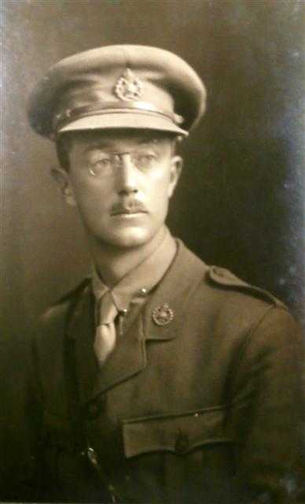

|  |
| Full portrait of Captain Dietrichsen. © Nottingham Law Society |
Captain Frederick "Freddie" Christian Dietrichsen was one of the senior officers for the 2/7th battalion of the Robin Hoods.
On the march into Dublin, around the area of Monkstown, Captain Frederick Christian Dietrichsen was greeted by his wife Beatrice, nèe Mitchell, whom he had married before the war.. Beatrice was Irish., and when the Germans began Zeppelin raids on British cities, Dietrichsen sent her and the children back to Dublin to stay with her family. They had come to the roadside, along with hundreds, even thousands of Irish, to cheer and support the British soldiers. When Dietrichsen saw his family, he broke ranks to embrace them. It would be the last time they would meet as he would be one of the first British soldiers to be shot and killed by the Irish at 25 Northumberland Road.
‘By his care, skill, and courtesy he endeared himself to all who knew him, and those who belonged to the same profession felt a pang of losing a real, true friend. He had left those he loved to serve his country when she needed his services, and in Dublin had met his death on the field of honour.’
Learn more about Freddie at: Nottinghamshire County Council Website